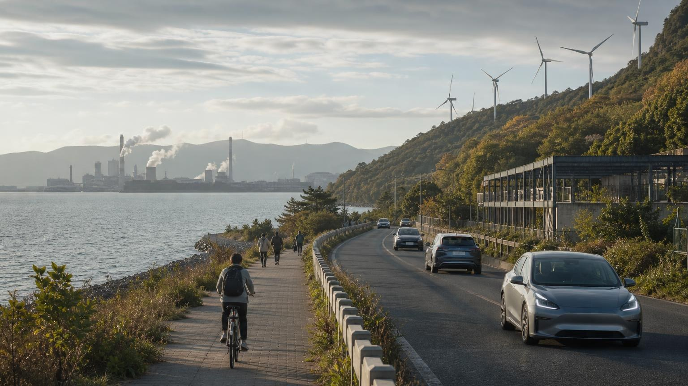

01
Issue · October 26, 2026
Electric vehicles, climate AI and green steel in transition
This week’s signal is that electrification, AI and industrial decarbonization are all moving into institutional design.
Climate & EnvironmentGlobal GovernanceEnergy Transition